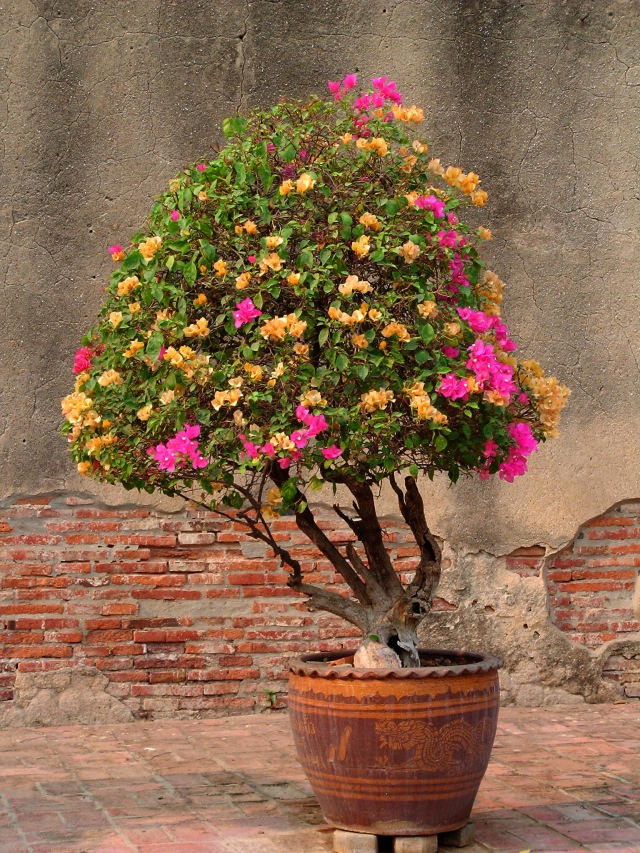
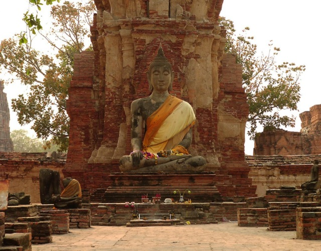
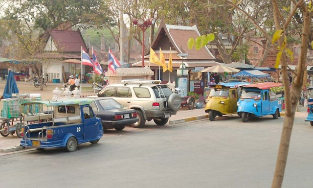

photo kamui
Wat Prasrisanphet
古都を包む空気の不透明感というのでしょうか 何とも表現しようのない背景色にとけ込んでいます
Wat Chaiwatthanaram

南国の古都です。ブーゲンビリアの可憐な鉢植えが...

Wat Phra Mahathat
穏やかな表情の仏像です
夕日を受けてシルエットになりつつある Wat Prasrisanphet
ライトに映える Wat Prasrisanphet

懐かしいミゼットです。現役で活躍しているのですね。